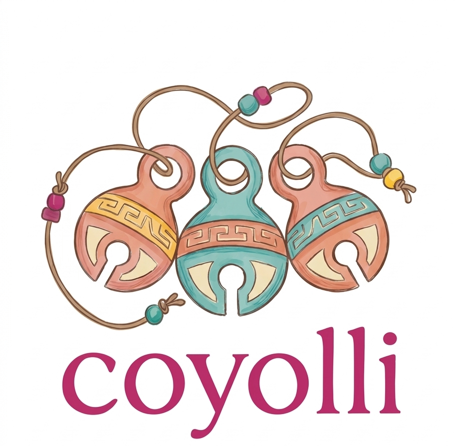
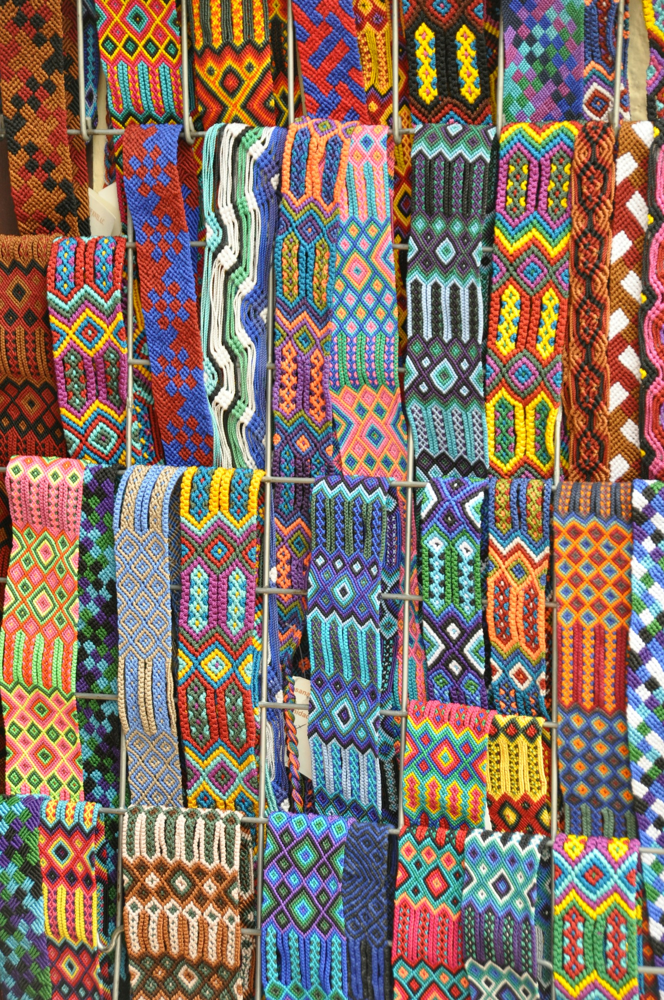
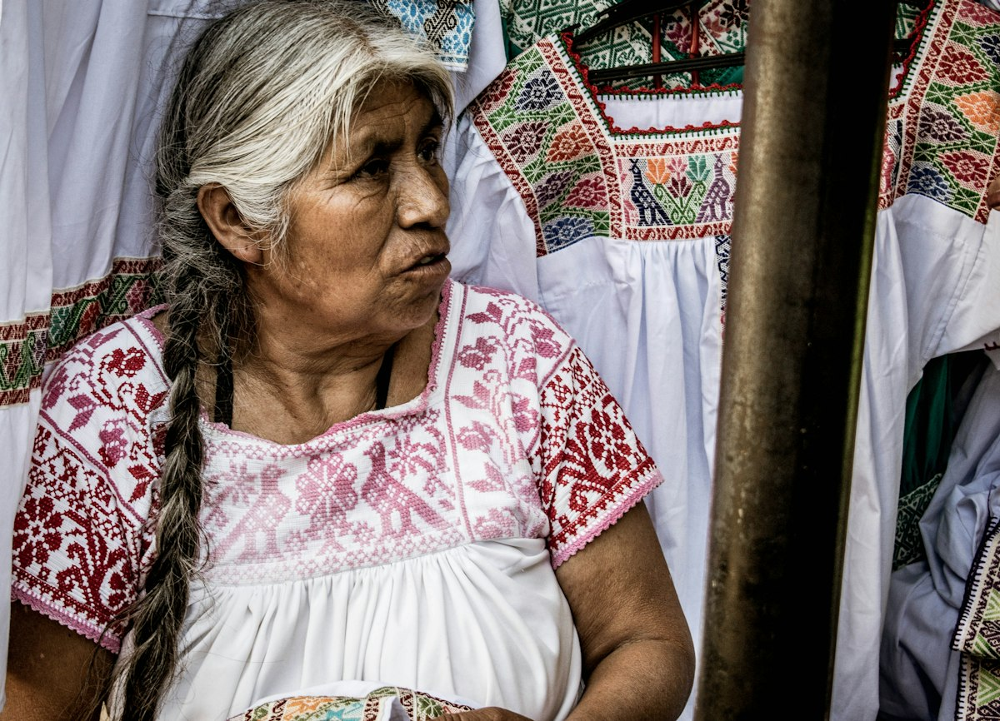
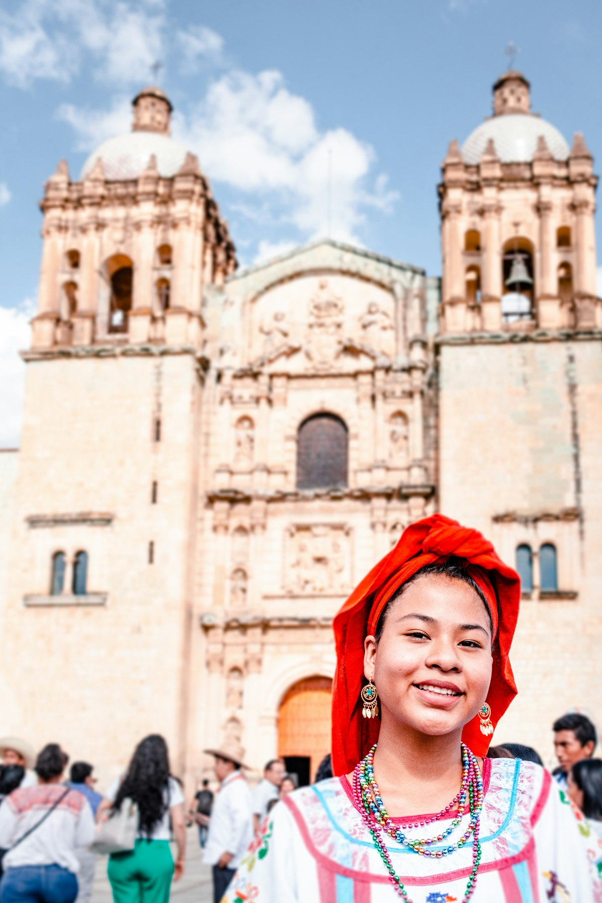
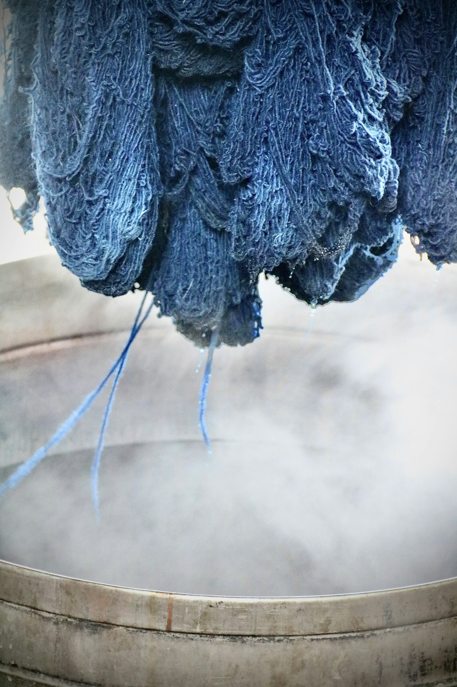
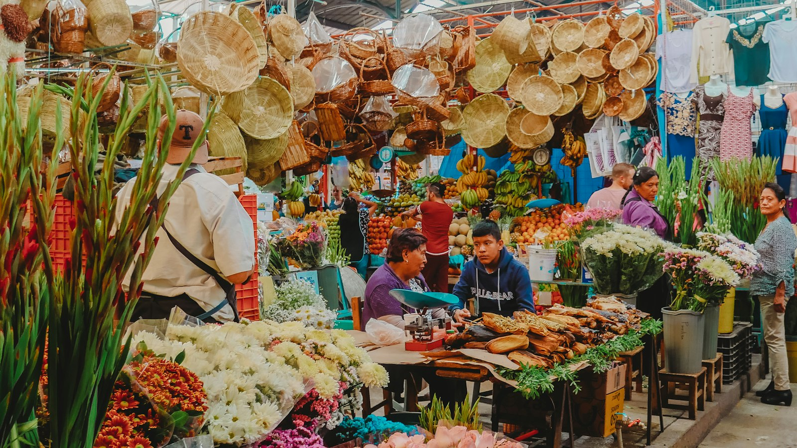
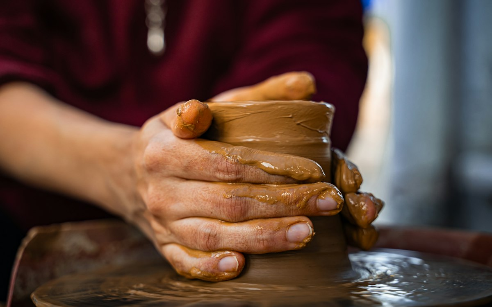

Taxco · Guerrero
Don Efraín, orfèvre
Troisième génération d'argentiers dans le barrio de la Garita. L'argent 925 est fondu, laminé et martelé à la main. C'est lui qui a appris à Mariana le repoussé.

Bijoux mexicains faits main · Toulouse
Coyolli veut dire « grelot » en nahuatl. Chaque pièce est imaginée dans l'atelier de Mariana à Toulouse, avec des matières et des savoir-faire rapportés de ses voyages chez les artisans du Mexique.

 Atelier Saint-Cyprien
Atelier Saint-Cyprien
Le manifeste
Il y a la Garonne, et il y a le Río Balsas. La brique rose de Toulouse, et la terre rouge d'Oaxaca. Depuis vingt ans, Mariana vit entre ces deux paysages, et ses bijoux sont la trace de ce va-et-vient.
Chaque collier, chaque paire de boucles part d'une matière choisie sur place : un lingot d'argent chez un orfèvre de Taxco, une poignée d'ambre brut à Simojovel, des écheveaux de coton teints à la cochenille dans la vallée de Oaxaca. Puis tout revient à Toulouse, dans un petit atelier du quartier Saint-Cyprien, où les pièces sont montées, ajustées, et signées.
Pas de série, pas d'usine. Des mains, des voyages, et une manière de faire qui prend le temps qu'il faut.
L'histoire de MarianaMa grand-mère gardait ses grelots de danse dans une boîte en fer-blanc. Quand elle l'ouvrait, toute la maison sonnait.Mariana, fondatrice de Coyolli
Les ateliers partenaires
Coyolli travaille avec une poignée d'ateliers familiaux, rencontrés au fil des voyages. Ils sont payés au prix juste, cités par leur nom, et leurs techniques sont respectées telles quelles.
Troisième génération d'argentiers dans le barrio de la Garita. L'argent 925 est fondu, laminé et martelé à la main. C'est lui qui a appris à Mariana le repoussé.

Perles de verre posées une à une sur la cire d'abeille et le fil. Chaque motif, cerf, peyotl, maïs, raconte une part de la cosmogonie huichole.

L'ambre de Simojovel a vingt-cinq millions d'années. Lupita et son fils Ismael le taillent et le polissent à la main, dans la cour de la maison, face à la sierra.
La collection
Colliers, boucles, bracelets. Toutes les pièces sont montées à Toulouse, en petite quantité, et numérotées à la main.
Comment naît un bijou Coyolli
Deux fois par an, en février et en octobre, Mariana part quatre à six semaines au Mexique. Elle visite les ateliers, choisit les matières, dessine sur place.
Argent, cuivre, ambre, jade, coton teint. Chaque lot est acheté directement à l'artisan qui l'a produit, jamais à un intermédiaire.
À Toulouse, dans l'atelier de Saint-Cyprien, les éléments sont assemblés, soudés, polis. Les fermoirs sont en argent massif, les cordons noués à la main.
Chaque pièce reçoit un petit grelot de cuivre, un coyolli, et un numéro. Vous savez d'où vient chaque composant, et qui l'a fait.






Les prochains marchés, les retours de voyage, les nouvelles pièces avant tout le monde. Une lettre par mois, pas plus.